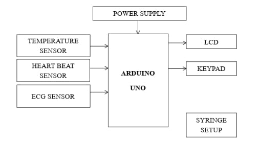
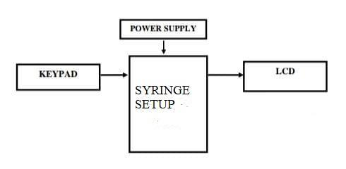

01 / Overview
Combining a delivery mechanism
with a monitoring interface.
The project investigated how a microcontroller-based system could combine a syringe-control mechanism with physiological monitoring. Its motivation was the need to observe patient parameters alongside the operation of a delivery system, bringing sensing, display and operator input into one prototype.
The publication describes an undergraduate biomedical engineering team project at Jerusalem College of Engineering, Chennai. Arduino Uno is the central controller. A keypad provides operator input, a motor-driven mechanism moves the syringe, and the monitoring subsystem includes heartbeat, ECG and temperature sensing.
The paper documents a design and an assembled proof of concept. Publication does not establish clinically validated automated anesthetic dosing, demonstrated delivery accuracy or proven safety in patients.
Source: published paper, abstract, introduction and methodology, pp. 780–782.
02 / System architecture
Arduino Uno at the centre.
The documented architecture links operator settings and sensor inputs with the controller, syringe mechanism and display. The paper identifies an AD8232 ECG module and a DHT11 temperature/humidity sensor, together with a heartbeat sensor, keypad and LCD. Its text also describes an alert mechanism.
Inputs
- KeypadOperator-selected setting
- Heartbeat sensorPulse-related signal
- AD8232 ECG moduleECG signal conditioning
- DHT11Temperature / humidity sensor
Central controller
Arduino Uno
Control and sensor-processing logic
Power supplyControl, display & alerts
- Motor-driven syringeDelivery mechanism
- LCDOperator information
- Alert mechanismProposed abnormal-condition notification


The original figures are reproduced as published. The simplified diagram uses the methodology's description of keypad input rather than treating every arrow in Figure 7 as a verified implementation detail.
03 / Control and monitoring
The proposed operating sequence.
The following sequence summarises the publication's design. The paper does not provide experimental records establishing every step as a validated operating behaviour.
Select a delivery setting
The operator uses the keypad to enter the intended setting. The paper describes preset operation but does not provide a validated dose-selection model or an infusion calibration procedure.
Operate the syringe mechanism
The Arduino-based controller operates the motor-driven syringe setup. The publication discusses motor movement as the means of driving the mechanism, without quantitative delivery measurements.
Process monitoring signals
The monitoring subsystem receives heartbeat, ECG and temperature-related readings from the documented sensors.
Display information
The LCD is the proposed interface for displaying system and monitoring information alongside operator input.
Notify the operator
The design includes alerts for abnormal monitored conditions; the introduction refers to a buzzer. Alarm thresholds and their physiological validity are not experimentally established in the paper.
The introduction relates delivery to monitored parameters, while the conclusion proposes stopping the motor when abnormal readings occur. This page therefore treats abnormality-triggered motor stopping as future work, rather than an experimentally validated feature.
Source: introduction and methodology, pp. 780–782; conclusion, pp. 783–784.
04 / Physical prototype
The hardware shown in the paper.
The publication's result section presents Figure 9, labelled “Output.” The original prototype photograph above shows the assembled syringe mechanism, keypad, LCD and wired electronics. It provides a record of the physical assembly.
Syringe mechanism
A mounted syringe and mechanical drive assembly form the delivery side of the prototype.
Keypad and LCD
The assembly includes a keypad for input and an LCD for displaying information.
Embedded electronics
The photograph shows connected boards and sensor wiring alongside the mechanism.
The photograph does not establish how accurately fluid was delivered or whether the system operated safely in patients. No individual author's construction role is specified by the publication.
View original Figure 9 photographSource: Anitha et al. (2022), “Result,” Figure 9, p. 783. Image reproduced under the publisher's CC BY 4.0 policy.
05 / Results and evidence
An assembled prototype.
A limited experimental record.
The paper describes the components and architecture and shows the assembled apparatus. It does not supply quantitative results sufficient to establish the performance claims below.
| Area | Documented evidence | Evidence still required |
|---|---|---|
| Physical implementation | Component descriptions, two system block diagrams and an assembled prototype photograph. | Documented operating tests that connect the design descriptions to measured behaviour. |
| Syringe delivery | A motor-driven syringe mechanism and a proposed operator-input workflow. | Drug-delivery accuracy, repeatability and infusion-rate calibration measurements. |
| Physiological monitoring | Heartbeat, AD8232 ECG and DHT11 sensor descriptions, with display and alert functionality proposed. | Sensor validation, comparison measurements and validated alarm thresholds. |
| Clinical use | An engineering motivation concerning anesthesia delivery and monitoring. | Evidence of clinical effectiveness and patient safety. These are not established by this publication. |
Source: complete five-page publication, pp. 780–784. No fictional measurements, clinical datasets or simulated device demonstrations are presented here.
06 / Limitations and future research
Separating a proposal
from a demonstrated capability.
This work is best described as a proof-of-concept engineering project. The publication leaves important questions about calibration, response behaviour, alarm design and the relationship between sensor values and delivery control unanswered by quantitative testing.
Extend monitoring and investigate control responses.
The authors propose additional monitoring parameters, including SpO₂ and blood pressure. They also propose using a monitored parameter to stop the motor when an abnormality occurs. These are future possibilities, not completed or validated features of the published prototype.
Further evaluation would need to distinguish mechanical delivery performance from physiological monitoring performance. Any claim about accuracy, clinical effectiveness or patient safety would require evidence beyond the paper's design descriptions and photograph.
Source: conclusion, pp. 783–784. The need for further measurement is an evidence-based interpretation of the publication's reporting limits.
07 / Publication and authors
The published research record.
Authors · In published order
Automated Anesthesia Control System With Patient Monitoring. Journal of Positive School Psychology, 2022, Volume 6, Issue 7, pages 780–784.
Department of Biomedical Engineering, Jerusalem College of Engineering, Narayanapuram, Chennai, India. Published 31 August 2022.
The author list includes academic staff and undergraduate scholars. Dharshan is credited as a coauthor using the name printed in the paper, M. Dharshan Keba. The publication does not specify individual contributions.
Sources and figure attribution
Technical source: the complete five-page paper supplied by the researcher. Figures 7, 8 and 9 are credited to the paper's five authors and extracted unchanged from p. 783. The original PDF is not hosted on this page.
The publisher's copyright policy licenses articles and figures under Creative Commons Attribution 4.0 International. The simplified architecture is a new explanatory diagram based on the paper, with its interpretive changes identified in the caption.